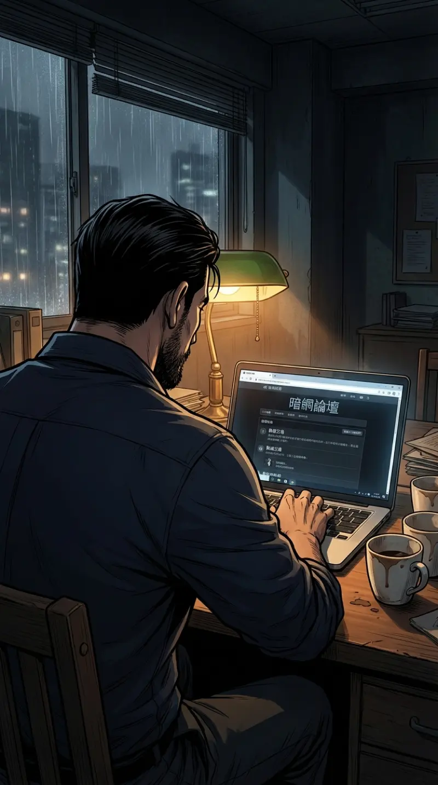
2010年9月，北京。盾甲科技办公室。
凌晨一点。整栋楼只有我这一间还亮着灯。台灯的暖黄光和屏幕的冷蓝光交织在一起，把我的影子劈成了两半。
周明远给我的那个暗网地址，我已经盯了三天。今晚，我决定进去。
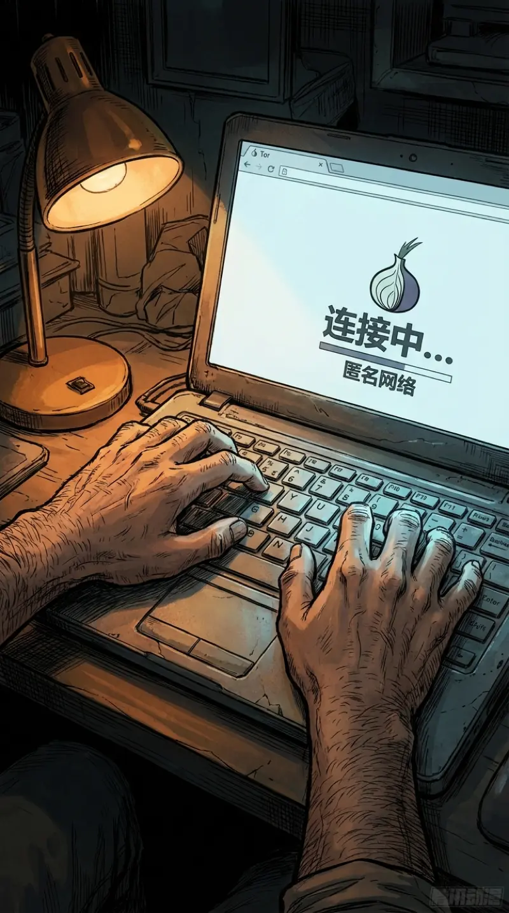
Tor浏览器在2010年的网络上慢得令人发指。进度条一格一格地爬，像蜗牛在结冰的坡道上攀岩。
2027年我用量子加密通道秒开任何.onion页面，现在连一个论坛首页都要等三分钟。
但周明远给我这个地址时那个眼神……他不是在开玩笑。
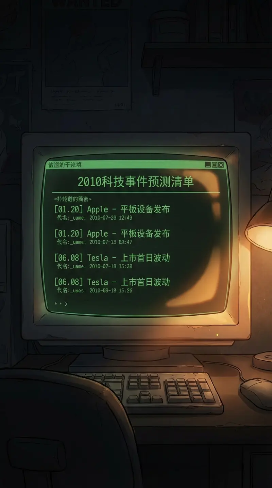
页面终于加载完毕。
是一个匿名论坛，看起来像2010年所有论坛一样粗糙。但我用黑客的直觉嗅到了不对劲——论坛的加密层级远超这个年代的技术水平。
用了二十分钟，我找到了隐藏频道的入口。
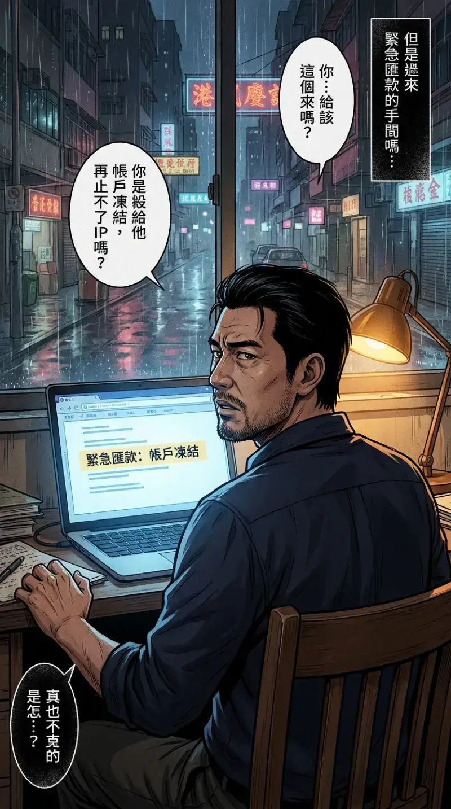
频道里置顶着一份清单。
《2010科技事件预测清单》
我的手从键盘上抬了起来。不是因为紧张——是因为清单上的每一条预测，我都知道是真的。因为我亲眼见过它们在未来发生。
但这份清单不是我写的。
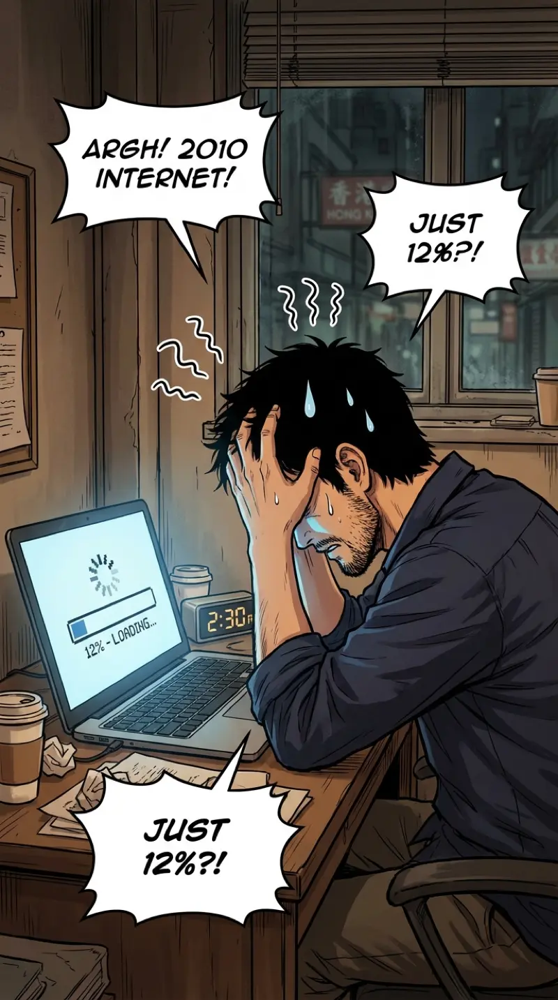
我下意识地去点击"发帖人资料"——弹出一个需要加载的页面。
进度条：3%……5%……5%……5%……
我在2027年能用脑机接口直接搜索全网数据库，现在被一个五十六千字节的个人资料页卡住了。
我看了一眼右下角的网速：每秒二十二千字节。
深呼吸。冷静。这就是2010年。你选择回来的。
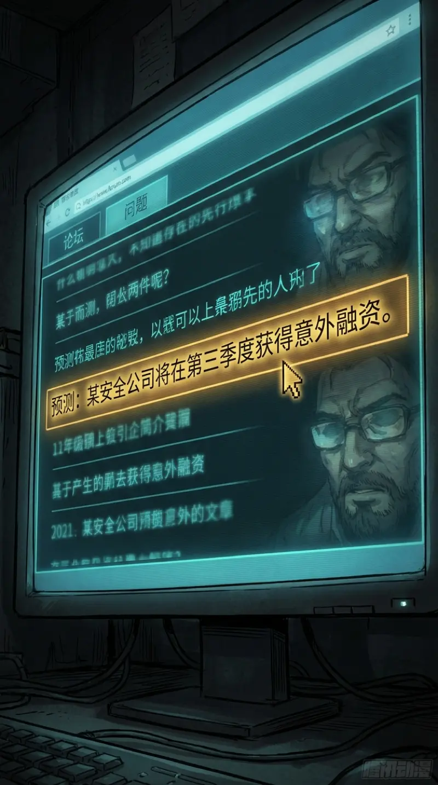
清单的第十七条让我停止了呼吸。
"第三季度，将有一家安全公司获得意外融资，创始人具有超前的技术视野。"
说的就是盾甲。说的就是我。
有人在观察我。不，不只是观察——有人在记录我的一切，并且把我的动向也列进了预测。
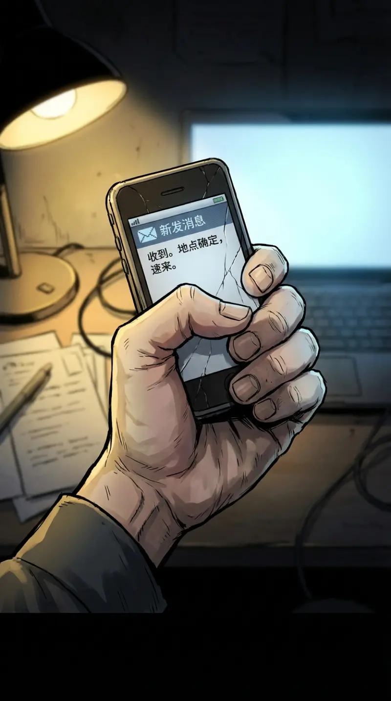
手机在桌上震了一下。又是匿名号码。
我犹豫了两秒，点开了。
"你在论坛停留太久了。建议你清除痕迹，关掉页面。——友善提醒"
有人在实时监控这个论坛。而且知道我进来了。
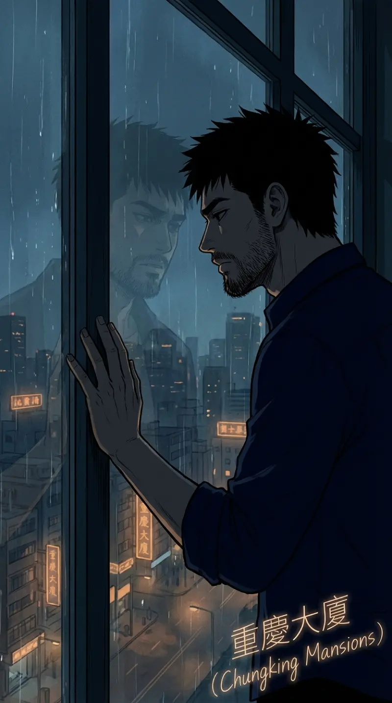
我关掉Tor，站起来走到窗前。
北京凌晨的天际线灰蒙蒙的，几盏不知道属于谁的灯还亮着。我的倒影浮在玻璃上，像另一个时间线的自己在看着我。
穿越者不止我和周明远。至少还有一个人，比我更早就在这里。而且他知道我的存在。
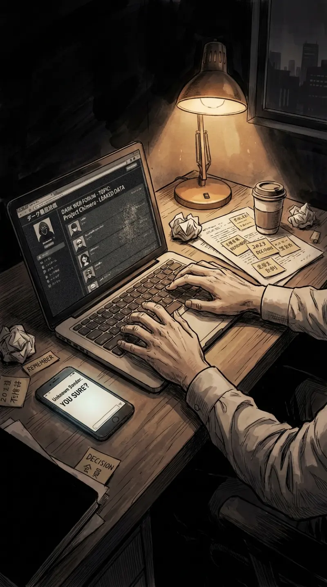
暗网论坛中有人在实时监控你。继续深入追查，还是退出保全？
清晨六点。我站在五道口一家二十四小时咖啡馆门口，刚给陈磊打完电话。
"现在？哥，现在是早上六点。"
"我知道。带上你的笔记本。十分钟。"
"……我连裤子都没穿。"
"穿上裤子。九分钟。"
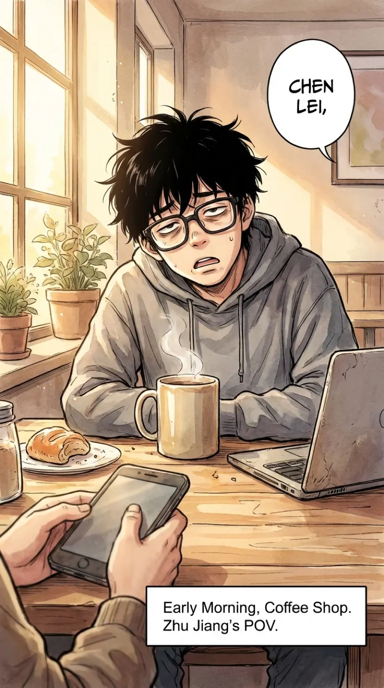
陈磊出现的时候，卫衣反穿，头发像鸟窝，眼镜歪在鼻梁上。
咖啡店的服务员看了他一眼，又看了一眼，然后默默把菜单递给了我。
我："他是我的技术合伙人。"
服务员礼貌地微笑："……您公司还招人吗？"
陈磊："你在嘲笑我。"
我："我在陈述事实。两杯美式，谢谢。"
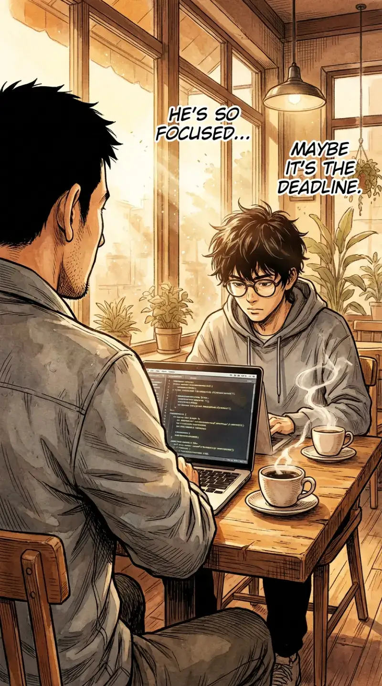
陈磊喝了一口咖啡之后，整个人清醒了三分。我打开笔记本电脑，把上回发现的那段2027年加密代码调了出来。
"你上次说解开了外层加密。里面还有什么？"
陈磊推了推眼镜，开始敲键盘。他的手指在键盘上飞舞的样子，跟在公司写代码时一模一样——只是多了黑眼圈和反穿的卫衣。
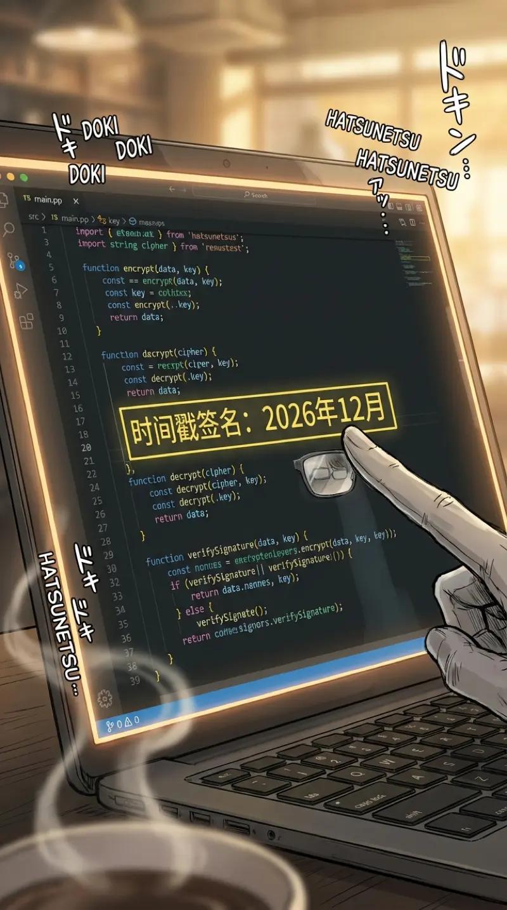
"哥，你看这个。"陈磊的声音突然变了。
屏幕上，他解开了加密代码的第二层。里面藏着一段元数据——一个时间戳签名。
签名日期：2026年12月。
我的穿越时间是2027年3月。这段代码，是在我穿越之前三个月写的。
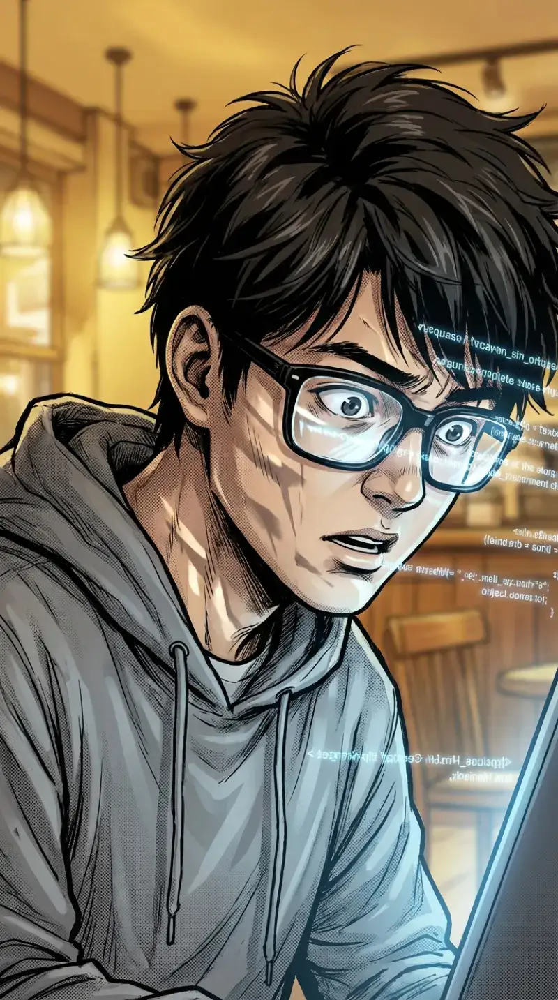
陈磊摘下眼镜擦了擦，又戴上。这是他极度困惑时的习惯动作。
"这不可能。这段代码的编译器版本是2025年才发布的。2010年不可能有人写出这种代码。"
他看着我。我看着屏幕。
他说得对。但他不知道的是——2026年12月，距离我穿越还有三个月，我根本不记得自己写过这段代码。
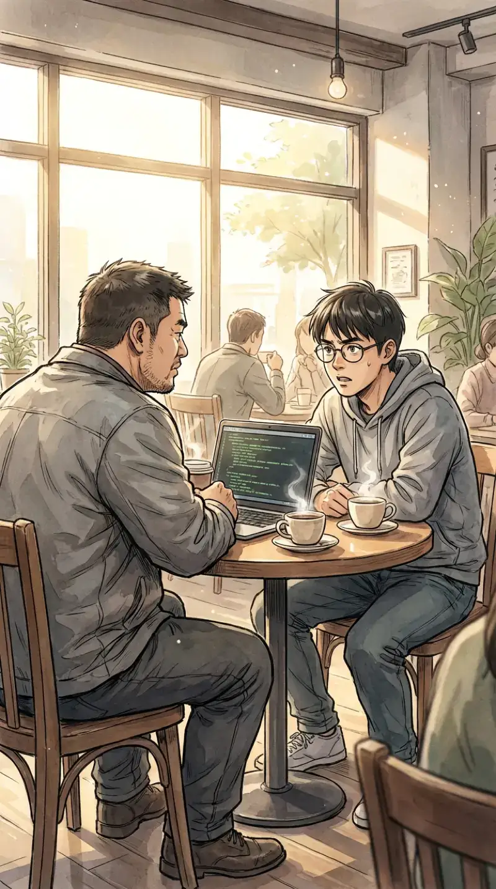
"陈磊，"我斟酌着措辞，"如果我告诉你，这段代码可能来自未来——"
他停下了敲击键盘的手指。
"你是说……时间旅行？"他的语气像在确认我是不是还清醒。
"我是说，有人用某种方式把2026年的代码放进了我们的系统。你只需要知道这个。至于'怎么做到的'——那部分你暂时不需要知道。"
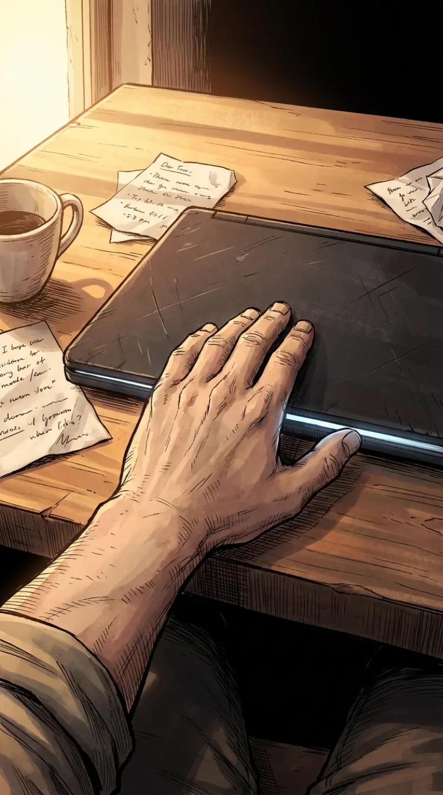
陈磊发现了关键证据。你选择告诉他多少真相？
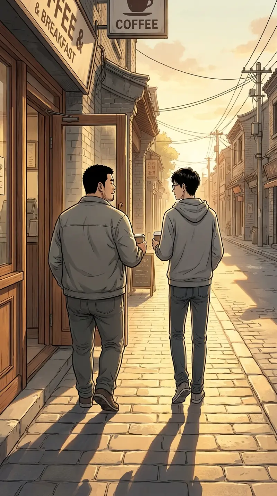
我合上笔记本电脑，把最后一口咖啡喝完。
"把这段代码的所有分析结果加密存档。不要上传到任何服务器，不要告诉任何人。包括张维。"
陈磊看了我两秒，点了点头。他知道什么时候不该问问题。
这就是为什么他是我最信任的搭档。
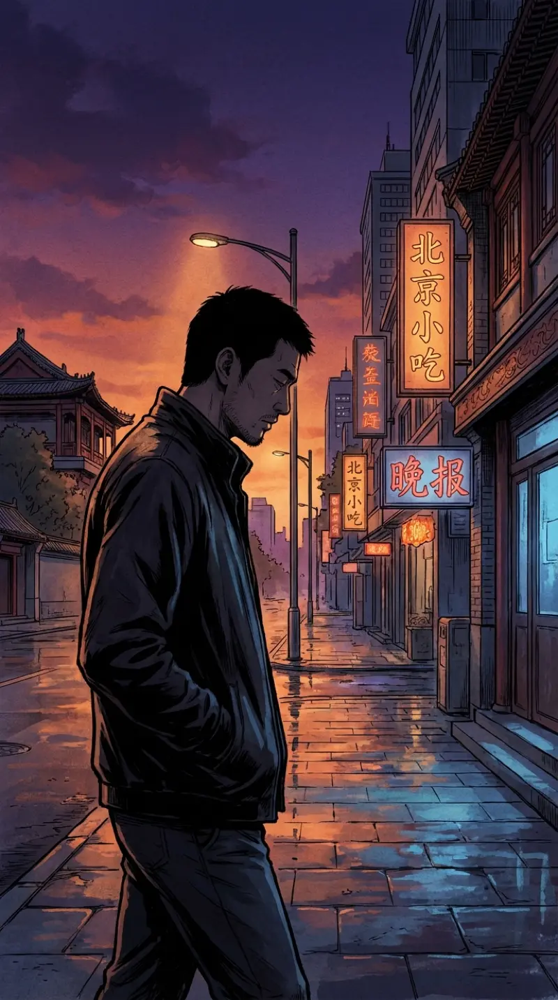
离开咖啡馆的时候，北京的天已经从金色变成了灰白色。
我独自走在五道口的街上，脑子里翻来覆去地想着三件事：
暗网上有人系统性地记录穿越者的活动。
2026年12月的代码在我穿越之前就已存在。
而张维——上一章周明远说的话一直在我耳边回响——"他不只是在做投资。"
今晚，我要亲自去看看张维在干什么。
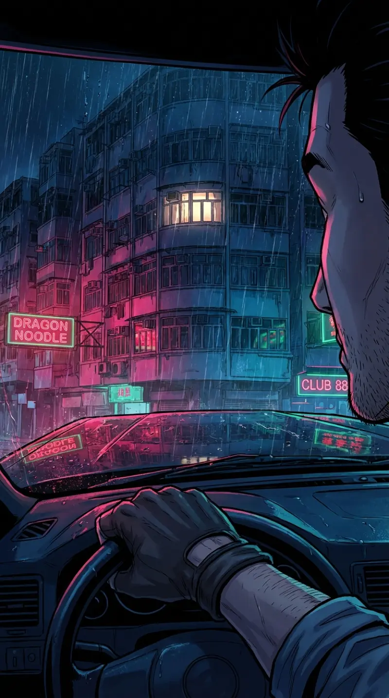
晚上十一点。我把车停在张维公寓楼对面的街边。
引擎关了，车灯关了。挡风玻璃上凝结了一层薄雾，把对面的霓虹灯招牌化成了一团团红绿相间的光晕。
三楼那扇窗还亮着。张维在家。
我在2027年做过无数次渗透测试和安全审计。但蹲人——这是第一次。
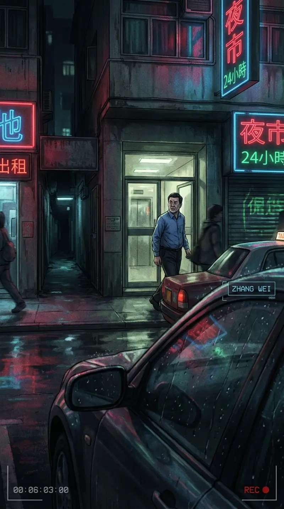
十一点四十分。张维的灯灭了。
五分钟后，他出现在楼下大门口。商务衬衫换成了深色夹克，脚步比白天快了一倍。他左右看了看——那种"确认没被跟踪"的看法，我太熟悉了。
他开始往东走，穿过了两条小巷。
我等他走出五十米，下了车。
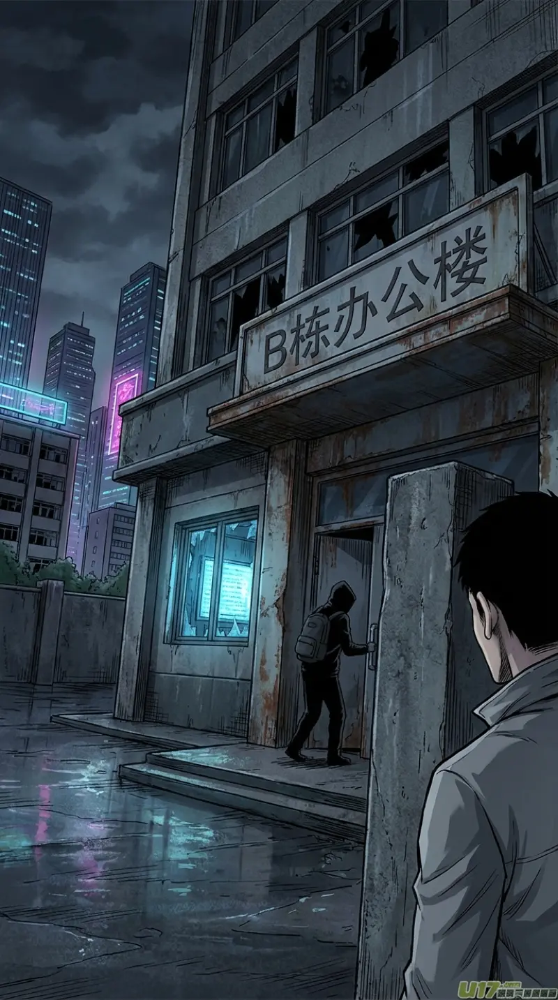
张维的目的地让我意外——中关村科技园区B栋。
这栋楼三个月前就空了，官方说法是"装修改造"。但此刻，一楼深处隐约透出一丝蓝色的光。
张维用一张门禁卡刷开了侧门。门没有完全关上。
我数了三十秒，跟了上去。
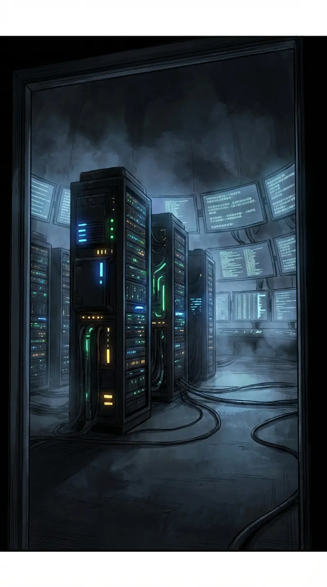
走廊尽头，一扇防火门半掩着。
我推开门的瞬间，愣住了。
一间完整的服务器机房。不是2010年水平的——一排排漆黑的服务器机柜整齐排列，蓝色和绿色的指示灯在黑暗中闪烁，像某种深海生物的发光器官。墙上挂着多块显示屏，数据流在上面无声地滚动。
这些设备，2010年不应该存在。
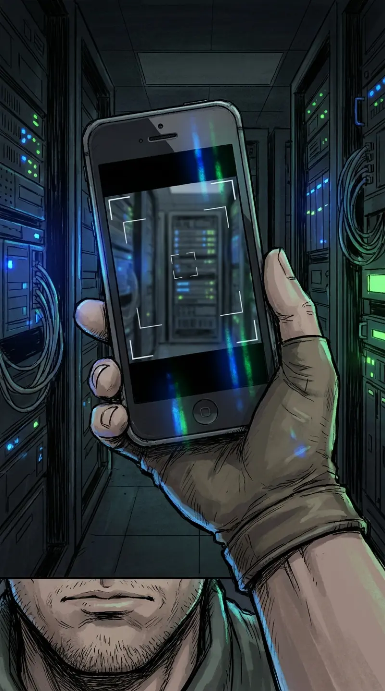
我掏出手机，开始拍照。
服务器型号、显示屏上的数据接口、机柜的散热系统。每一张照片都是证据。这些设备的制造工艺，我在2027年见过——但2010年，这些东西连概念都还没有。
张维不知道去了哪里。机房里只有我和这些不属于这个时代的机器。
以及它们低沉的嗡鸣声。
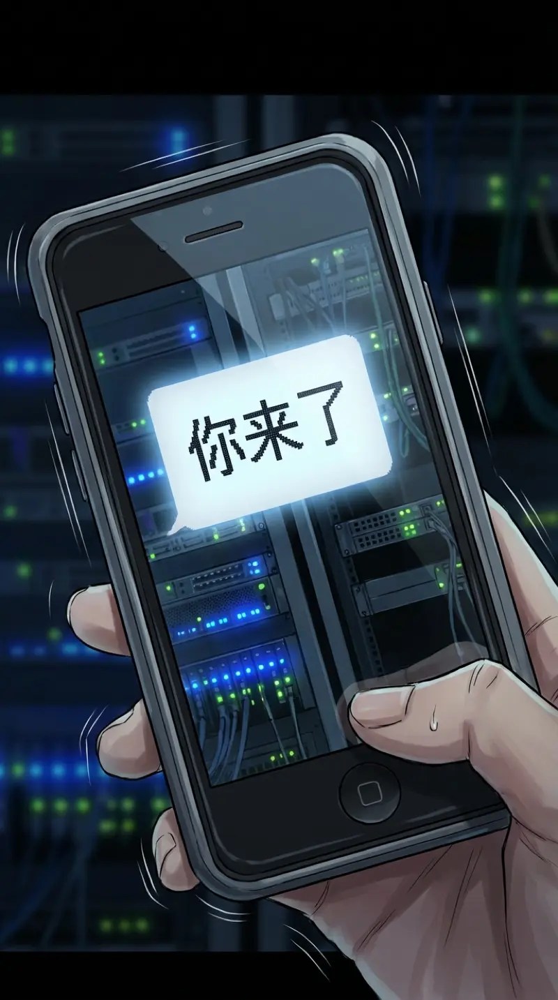
手机震动。
又是匿名号码。第三条了。
"你来了。我等你很久了。"
我的手指在屏幕上停顿了一秒。
发这条短信的人不是在论坛上给我发"友善提醒"的那个——语气完全不同。这个人在邀请我。
这是一个陷阱。一个精心设计的、让我一步一步走进来的陷阱。
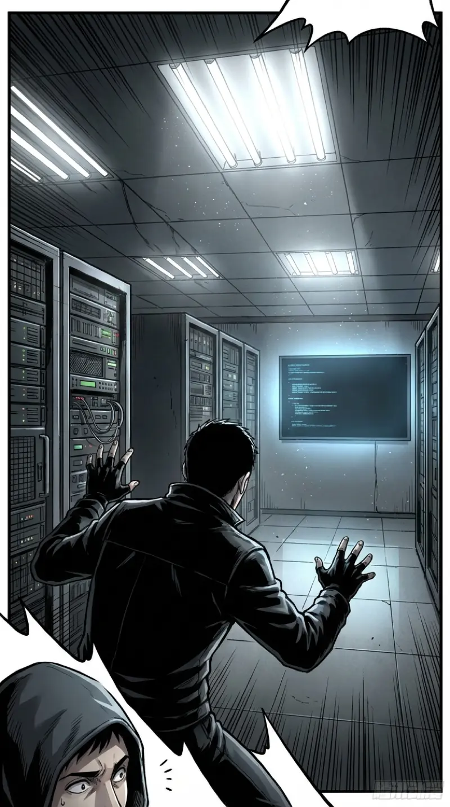
机房的灯突然亮了。
不是全亮——是从远端开始，一排一排地亮过来，白色荧光灯管在天花板上依次闪烁。像有人在用开关一个个地点亮它们。
或者像是某个系统在启动。
我下意识地退了半步。手机握得更紧了。
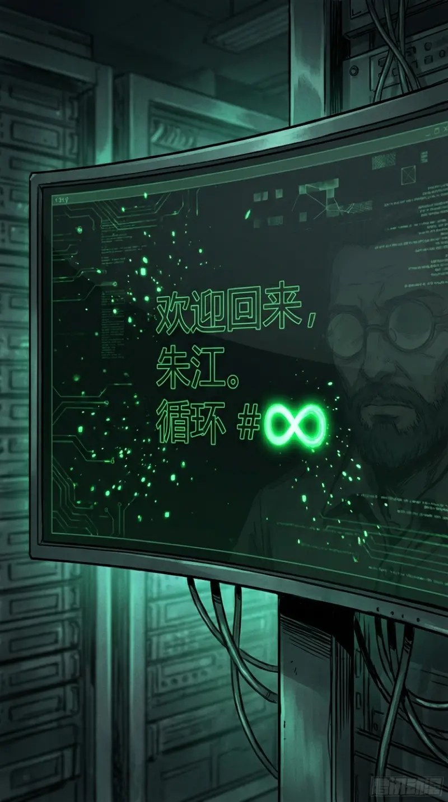
机房最深处的那块大屏幕亮了。
黑色背景上，绿色的字符缓缓浮现，一个字一个字地跳出来：
欢迎回来，朱江。
循环 #∞
"回来"？我什么时候来过？
"循环"？什么循环？
那个无穷符号在屏幕上跳动着，比其他字符亮了整整一倍。
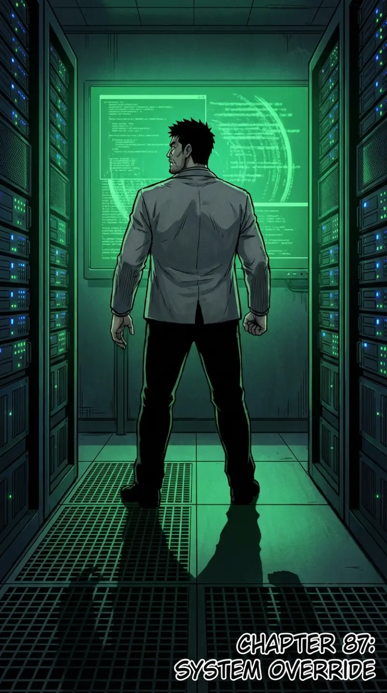
面前是一个明显的陷阱——一个似乎了解你一切的系统。你怎么做？
我深吸一口气，向那块发着绿光的屏幕走去。
屏幕上的光照亮了我的脸。
然后，屏幕上又跳出了一行字：
准备好了吗？
这一次，试着记住。
第八章 · 完
下章预告——
"循环 #∞"——朱江可能已经穿越过无数次，每次记忆都被清除？
那块屏幕背后是谁？张维？一个更强大的穿越者？还是朱江自己？
"试着记住"——如果这不是第一次穿越，那前几次的朱江做了什么？失败了什么？
而那个写出2026年12月代码的人——会不会是另一个循环里的朱江自己？